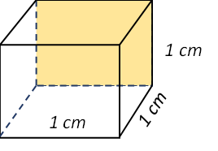
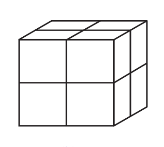
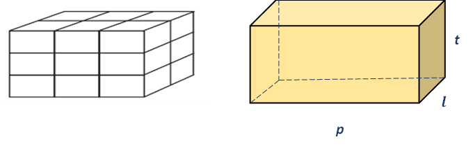
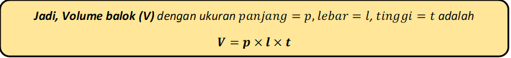

Volume Kubus & Balok

Untuk menentukan ukuran besar suatu bangun ruang digunakan volume. Volume suatu bangun ruang ditentukan dengan membandingkan besar ruang tersebut terhadap satuan pokok volume, misalnya 1 cm3 (Adinawan, 2017).
Kubus pada gambar memiliki panjang rusuk 1 m. Volume kubus yang panjang rusuk-rusuknya 1 cm seperti di samping dinyatakan dengan 1 cm3.
SUB. 1
Volume Kubus
Kubus merupakan balok khusus, yaitu balok yang mempunyai ukuran panjang,lebar, dan tinggi yang sama. Untuk menentukan volume sebuah kubus perhatikan gambar di bawah. Gambar tersebut menunjukkan sebuah kubus satuan dengan panjang rusuk 2 satuan panjang.
|  |
| Volume kubus tersebut = (panjang × lebar × tinggi) kubus satuan = (2 × 2 × 2) satuan volume = 23 satuan volume = 8 satuan volume (diperoleh rumus volume kubus) |
SUB. 2
Volume Balok
Selanjutnya perhatikan Gambar di bawah ini. Gambar tersebut menunjukkan sebuah balok satuan dengan ukuran panjang = 3 satuan panjang, lebar = 2 satuan panjang, dan tinggi = 3 satuan panjang.
Melanjutkan konsep yang dipakai pada Sub.1 Volume Kubus

Maka kita bisa mencari volume balok tersebut dengan memakai kubus satuan yang ada, yaitu:
Volume balok = (panjang × lebar × tinggi) kubus satuan
= (3×2×3) satuan volume
= 18 satuan volume
